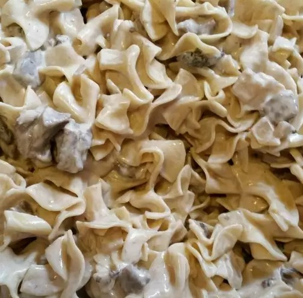

Beef Strogonoff- Recipe

Beef Stroganoff or beef Stroganov[a] is a Russian dish of sautéed pieces of beef in a sauce of mustard and smetana (sour cream). From its origins in mid-19th-century Tsarist Russia, it has become popular around the world, with considerable variation from the original recipe. Mushrooms are common in many variants.
Ingredients
- 1 pound ground beef
- ½ teaspoon garlic powder
- ½ teaspoon salt
- ½ teaspoon ground black pepper
- 1 cube beef bouillon
- 1 medium onion, chopped
- 8 ounces fresh mushrooms, sliced
- 1 pint sour cream
- 4 ounces egg noodles, cooked and drained
Steps
- a large skillet brown beef in oil over medium high heat. When meat is browned, drain excess fat from skillet. Add garlic powder, salt and pepper and stir in.
- Add bouillon, onion and mushrooms to skillet and saute until onions are translucent. Remove from heat (very important) and add sour cream. Stir all together and serve over hot cooked egg noodles.